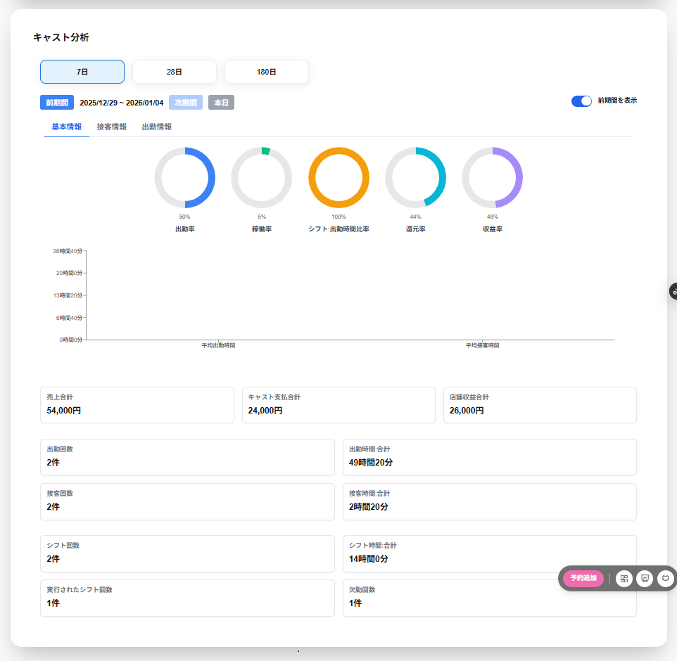

キャスト分析の画面には以下の項目が表示されます。
・7日
7日間のキャスト分析を表示します。
・28日
28日間のキャスト分析を表示します。
・180日
180日間のキャスト分析を表示します。
・前期間
選択している期間の前期間のキャスト分析を表示します。
・期間の年月日
表示しているキャスト分析の年月日が表示されます。
・次期間
選択している期間の次期間のキャスト分析を表示します。
・本日
本日から直近7日間・28日間・180日間のキャスト分析を表示します。
・前期間を表示
前期間を表示を選択すると、現在表示している期間と前期間を比較することができます。
※180日を選択している場合は前期間を表示はできません。
※出勤率・稼働率・シフト:出勤時刻比率、還元率・収益率は比較表示されません。
キャスト選択の画面の上部には以下の選択のタブが表示されます。
・基本情報
・接客情報
・出勤情報
